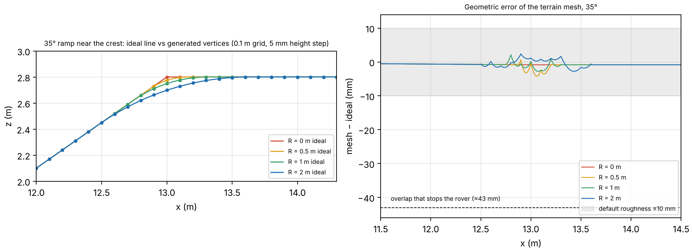
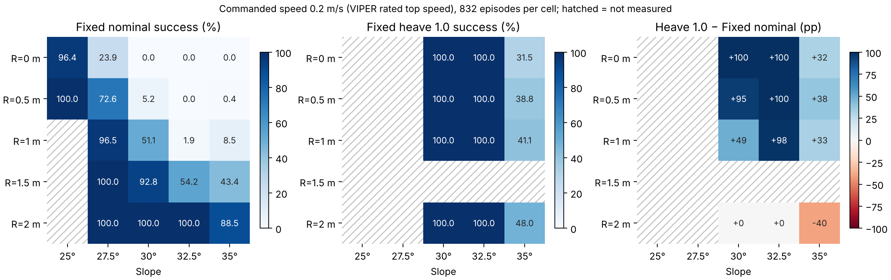
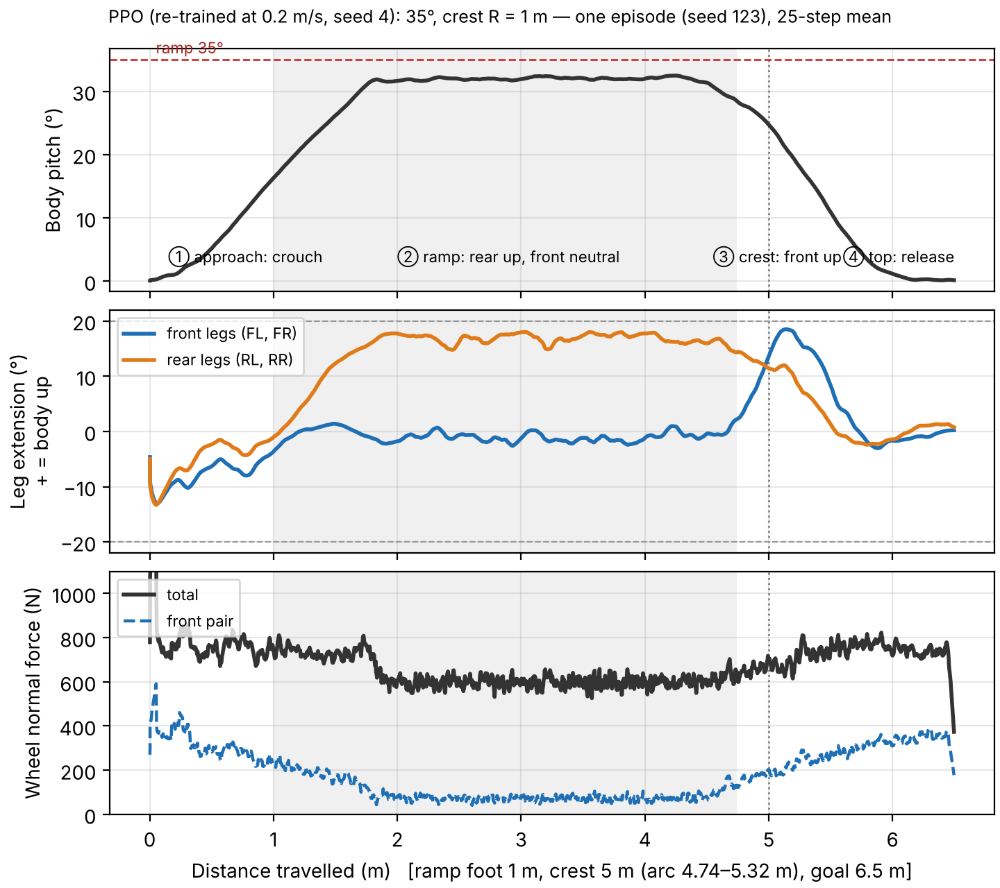
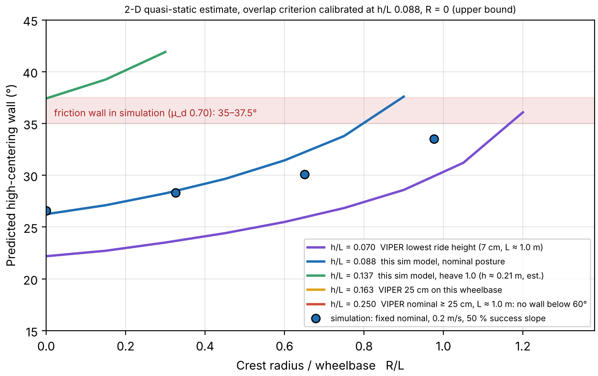
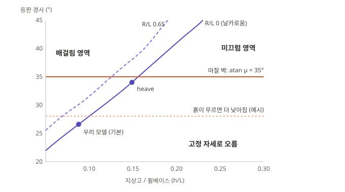

한 줄 — 꼭대기(경사→평지 꺾임부)의 둥근 정도가 배 걸림 경계를 정한다는 결과는 나왔지만, 사용한 VIPER 형상 모델의 지상고가 실제 VIPER 요구값의 절반이라 "VIPER급 로버"라는 표현은 쓰지 않고 "VIPER 형상 기반 모델(치수 상이)"로 한정하며, 지상고/휠베이스(h/L) 지도로 범위를 줄이는 방향을 제안합니다.
이 연구는 KSRC(한국 우주 로버 챌린지)에서 시작했습니다. 규사 6호(입자 크기: 0.5~1.0mm)로 만든 30° 경사를 우리 로버가 오르다가 뒤집히는 것을 보고, 30° 모래 경사나 달 표면 같은 지형을 오르려면 어떻게 해야 하는지를 고민 - 이 고민은 지도교수님의 L-Project 30° 등판 연구로 이어졌습니다. 저는 그 등판 실험 설정을 VIPER 형상 모델로 옮겨 시험하다가, 경사 자체가 아니라 경사가 끝나고 평지로 꺾이는 꼭대기(크레스트)에서 문제가 생긴다는 점에 주목했습니다. 고정 서스펜션 로버가 30° 경사의 날카로운 꼭대기에 차체가 걸려 멈춘 것입니다(성공률 0.8 %). 크레스트의 모양을 변수로 다루는 것은 이 연구에서 새로 세운 질문입니다. 자동차의 브레이크오버 각 2·arctan(2h/L)은 "처음 닿는 각"(이 모델 19.1°, 실측 지상고 기준)일 뿐, 실제로 멈추는 경사(26.6°)와 둥근 꼭대기는 설명하지 못합니다.
질문(가설): 배 걸림을 정하는 것은 경사각만이 아니라 꼭대기의 둥근 정도인가? 그렇다면 능동 서스펜션은 어떤 경사 × 꼭대기 조합에서만 필요한가?
이 가설은 03의 시뮬레이션에서 이 모델에 대해서는 지지되었습니다(꼭대기 반경에 따라 50 % 경사가 7° 이상 이동). 다른 로버나 실제 토양에서 성립하는지는 확인하지 않았습니다.
| 항목 | 설정 |
|---|---|
| 시뮬레이터 | Isaac Sim 5.0 + Isaac Lab, 강체 지면, 동마찰 0.70 / 정마찰 0.90 |
| 지형 | 경사 25~35° × 꼭대기 반경 R = 0, 0.5, 1, 1.5, 2 m (휠베이스 1.54 m 대비 R/L 0~1.30) |
| 속도 | 0.2 m/s 고정, VIPER 최고 속도 (NASA NTRS 20240013903) |
| 평가 | 조건당 832회, 성공 = 65 s 안에 6.5 m(꼭대기 너머 1.5 m) |
| 비교 | 고정 기본 자세 / 고정 최대 높이(heave 1.0) / 학습 정책(PPO, 시드 3개) |


| 꼭대기 반경 R | 0 | 0.5 m | 1 m | 1.5 m | 2 m |
|---|---|---|---|---|---|
| 고정 기본 자세 50 % 경사 | 26.6° | 28.3° | 30.1° | 33.5° | 35° 초과 |
| 고정 기본, 832대 | 65 s 안 성공 | 130 s 안 성공 | 꼭대기 통과 시간 (성공 로버 중앙값) |
|---|---|---|---|
| 32.5° (마찰 벽 2.5° 아래) | 1.9 | 40.6 | 59 s (배를 끌며 기어 넘음) |
| 35° (마찰 벽) | 8.5 | 16.9 | 5 s (걸리지 않은 로버만 통과) |
한때 "R = 1 m에서는 35°가 32.5°보다 잘 넘는다"는 역전이 보였지만, 제한 시간을 늘리면 사라집니다. 32.5°에서는 견인력에 여유가 있어 배가 닿아도 끌고 넘어가고, 35°에서는 여유가 없어 배가 닿는 순간 멈춥니다. 기하 벽과 견인 벽이 독립이 아니라는 직접 관찰입니다. 32.5°는 130 s에도 포화되지 않아(멈춘 로버의 53 %가 마지막 20 s에 아직 전진 중) 260 s 재측정을 진행 중입니다.
| 35°, 0.2 m/s | 고정 기본 | 최대 높이 | 학습 정책 (시드 6 / 3 / 4) |
|---|---|---|---|
| R = 0 | 0 | 31.5 | 34.1 / 49.8 / 59.5 |
| R = 1 m | 8.5 | 41.1 | 98.2 / 97.8 / 100 |
| R = 2 m | 88.5 | 48.0 | 98.8 / 98.6 / 100 |
날카로운 꼭대기의 35°는 "미해결"로 둡니다. 최대 높이 자세와 학습 정책 모두 오르는 에피소드는 있지만 성공률이 50 % 안팎이고, 학습 정책은 시드에 따라 34~60 %로 흔들려 안정적으로 오른다고 말할 수 없습니다.
| 35°, 65 s → 130 s | R = 0 | 0.5 m | 1 m | 1.5 m | 2 m |
|---|---|---|---|---|---|
| 고정 기본 | 0 → 2.6 | 0.4 → 5.5 | 8.5 → 16.9 | 43.4 → 62.5 | 88.5 → 93.8 |
| 최대 높이 | 31.5 → 52.8 | 38.8 → 60.2 | 41.1 → 63.3 | 45.1 → 65.0 | 48.0 → 66.7 |
고정 기본 자세는 R ≤ 1 m에서 시간을 두 배로 줘도 거의 늘지 않습니다. 배가 걸린 채 멈춘 것입니다(배 접촉 0.36~0.39). 최대 높이 자세는 배가 걸리지 않고(배 접촉 0~0.02) 모든 R에서 약 20 %p씩 오릅니다. 미끄러지며 느리게 올라 시간이 부족했던 것입니다. 130 s 기준으로 최대 높이 자세는 R ≤ 1.5 m에서 고정 기본과 같거나 더 낫고, R = 2 m에서만 손해(−27 %p)입니다.
학습 정책은 다리 4개 각도와 바퀴 4개의 속도 보정을 함께 출력합니다. 바퀴 출력을 끄고(바퀴는 명령 속도 0.2 m/s 그대로) 다리만으로 같은 조건에서 500회 이어 학습시켰습니다(학습 설정 wheel_scale 0 확인).
| 35°, 65 s (시드 4 / 6 / 3) | R = 0 | R = 1 m | R = 2 m |
|---|---|---|---|
| 다리 + 바퀴 (전체 정책) | 59.5 / 34.1 / 49.8 | 100 / 98.2 / 97.8 | 100 / 98.8 / 98.6 |
| 다리만 재학습 | 48.2 / 42.8 / 53.8 | 74.3 / 78.0 / 76.6 | 80.3 / 82.8 / 82.3 |
| 최대 높이 고정 (비교) | 31.5 | 41.1 | 48.0 |
다리만으로는 시드와 무관하게 R = 1 m 약 76 %, R = 2 m 약 82 %에 머물고, 바퀴 속도 조절이 약 20 %p를 더합니다. 날카로운 꼭대기(R = 0)에서는 차이가 없습니다. 다리만 써도 최대 높이 고정보다 30 %p 이상 높습니다. 앞·뒷바퀴 속도 차로 경사 견인을 높인 선행 실험(Cao 외, ISTVS 2021)과 같은 방향입니다. 한계: 처음부터가 아니라 기존 정책을 이어 학습한 결과입니다.
| 자세 | 성공률 | 오르막 속도 (중앙값) | 앞바퀴 하중 몫 (중앙값) | 차체 기울기 |
|---|---|---|---|---|
| 고정 기본 | 88.5 | 9.75 cm/s | 12.5 % | 35.3° |
| 뒷다리만 들기 | 83.2 | 8.69 | 12.4 % | 31.9° |
| 최대 높이 0.5 | 80.3 | 9.07 | 10.3 % | 35.3° |
| 앞다리만 들기 | 54.0 | 7.41 | 9.1 % | 38.6° |
| 최대 높이 1.0 | 48.0 | 6.51 | 8.0 % | 35.3° |

정정: 이전에 "뒤를 올려 앞바퀴를 더 누른다"고 설명했지만, 이 기록에서 오르막의 앞바퀴 하중은 전체의 약 12 %로 늘지 않았습니다. 차체를 세우는 효과(3°)만 보입니다. 패턴 설명용이며 시드 6, 3의 기록을 추출 중입니다.
모델은 VIPER의 형상(4륜, 독립 서스펜션, 마스트)을 따랐지만 치수가 다릅니다. 이 연구의 현상을 정하는 치수가 바로 지상고라서, "VIPER급"이 아니라 "VIPER 형상 기반 모델(치수 상이)"로 표기합니다.
출처: VIPER mobility (NASA NTRS 20220000441), VIPER geotechnical (Planetary Science Journal, 2025)
| 분야 | 연구 | 한 것 | 겹침 |
|---|---|---|---|
| 도로공학 | Eck & Kang 1991, HANGUP | 건널목 형상 × 휠베이스 × 지상고로 저지상고 차량 걸림 예측 | 큼 |
| 화성 로버 | MER 운영, TANav (JFR 2009), ACE (arXiv:1808.00031) | 지상고·high-centering을 경로계획에서 판정 | 큼 |
| 능동 자세 | Scarab (IJRR 2010), SherpaTT (JFR 2018) | 차체 높이·자세 능동 조절, 급경사 실물 (최대 28°) | 중간 |
| 도로 볼록 종단곡선 걸림 | Eck & Kang (TRR 1356, 1992), French·Clawson·Eck (TRR 1847, 2003), HANGUP 소프트웨어 | 지상고·휠베이스·오버행으로 볼록 도로 단면 걸림 판정, 기준 차량 치수 | 높음 (기하 부분) |
| 능동 섀시 | MARCEL (Bouton & Gao 계열, JFR 2023) | 능동 관절 2개 4륜 섀시, 하중 재분배로 계단·모래 탈출 (지상고 33 cm, 휠베이스 58 cm) | 중간 |
| 정지 감지 | Gonzalez 외 (JFR 2018), 경량 로버 정지 예측 (ASME 2022) | 바퀴·IMU 신호로 슬립과 정지(immobilization)를 감지·예측 | 중간 |
| 자세와 슬립 | Inotsume 외 (JFR 2013) | 롤 자세가 모래 경사 횡단 미끄러짐에 주는 영향 | 중간 |
| 학습 제어 | ERNEST (arXiv:2606.06790), TERRA (CoRL 2026) | 능동 서스펜션 강화학습, 실물·변형 지면 (15~25°) | 작음 |
서론에서 HANGUP 계열을 반드시 인용하고, "기하 부분은 기존 이론"이라고 먼저 인정해야 해.
조사 범위에서 찾지 못한 것: 급경사(25~35°) 꼭대기의 배 걸림 경계를 마찰 한계와 한 지도에 놓고, 고정 자세로 되는 범위와 능동 자세가 필요한 범위를 h/L, R/L로 나눈 것. "없다"가 아니라 "못 찾았다" 수준이며, 결과는 시뮬레이션뿐입니다.
바꾼 질문: 지상고/휠베이스(h/L)와 꼭대기 반경(R/L)이 주어질 때, 배 걸림이 마찰 한계보다 먼저 오는 조건은 무엇인가.


로버가 경사를 오르려면 문 두 개를 다 통과해야 해.
문 ① 기하 벽(배걸림): 차체 배가 꼭대기에 닿느냐
문 ② 견인 벽(미끄럼): 바퀴가 미는 힘이 내려가려는 힘을 이기느냐
둘을 합치면
통합이 어려운 이유 (비관적으로)
등판 한계는 두 벽 중 낮은 쪽입니다. ① 기하 벽(배 걸림)은 지상고/휠베이스(h/L)와 꼭대기 반경(R/L)이 정하고, ② 견인 벽(미끄럼)은 바퀴가 낼 수 있는 견인력이 정합니다. 이 시뮬레이션은 ②를 쿨롱 마찰 μ 하나로 두었기 때문에 견인 벽이 atan μ(μd 0.70 → 35°)로 고정됩니다.
실제 흙(레골리스)에서는 ②를 μ 하나로 정할 수 없습니다. 바퀴가 가라앉고(침하) 앞의 흙을 밀어내며(불도저 저항), 견인력은 흙의 점착력·내부마찰각, 바퀴 하중, 슬립에 따라 비선형으로 변합니다. 이 부분부터는 Bekker–Wong 계열 지반역학으로, 슬립의 함수로 계산해야 합니다.
현재 범위는 μ를 바꿨을 때 견인 벽이 atan μ를 따라 움직이는지 확인하는 데까지입니다(동마찰 0.5·0.6·0.8, 정마찰 0.7 측정 중). 토양 계수(kc, kφ, n, c, φ, K)는 문헌마다 편차가 커서, 지반역학과의 결합은 다음 단계로 둡니다. 참고: Bekker의 압력–침하식과 Janosi–Hanamoto(1961) 전단식은 J. Y. Wong, Terramechanics and Off-Road Vehicle Engineering(2nd ed., 2009)에 정리된 기초 이론입니다.
| 질문 | 답변 |
|---|---|
| VIPER는 지상고 25 cm인데? | 맞습니다. "VIPER 형상 기반 모델(치수 상이)"로 표기하고 h/L로 일반화하며, 지상고가 낮은 상태의 결과임을 명시합니다. |
| 도로공학에 이미 있지 않나? | 걸림 기하는 인용합니다. 차이는 급경사에서 마찰 한계·자세 효과와 함께 본 것입니다. |
| 지면이 강체인데? | 배 걸림 경계는 낙관적(상한)입니다. 바퀴가 가라앉으면 차체가 그만큼 낮아지기 때문입니다. 견인 쪽은 흙에서 더 좋을 수도 나쁠 수도 있어 방향을 알 수 없고, Bekker–Wong 지반역학으로 따로 계산해야 합니다(06 참고). |
| 바퀴를 빨리 돌려서 이긴 것 아닌가? | 일부는 맞습니다. 다리만으로 재학습하면 R ≥ 1 m에서 약 20 %p 낮습니다. 다만 다리만으로도 최대 높이 고정 자세보다 30 %p 이상 높습니다. |
| 시드 3개, 날카로운 35°는? | 시드별 값을 그대로 보고합니다. 날카로운 35°는 오르는 에피소드는 있지만 성공률이 50 % 안팎이고 시드마다 크게 달라 "미해결"로 둡니다. |
| 65 s 제한은 왜? | 0.2 m/s로 6.5 m를 가는 이상 시간(32.5 s)의 2배입니다. 배를 끌며 넘는 칸은 130 s에서 크게 오르므로(R = 1 m, 32.5°: 1.9 → 40.6 %) 제한 시간을 함께 보고하고 130·260 s를 재측정 중입니다. |
| 영상만 보면 자주 넘어지는데? | 영상은 로버 1대라 매번 같은 타일입니다. 같은 조건 832대 평가의 넘어짐은 0.7~2.8 %이고, 꼭대기에 걸린 채 옆으로 구르는 형태입니다(최대 롤 중앙값 47°). |
| 격자가 둥근 꼭대기를 망가뜨리지 않나? | 지형을 10 cm 간격 점으로 만들어도, 점 사이를 잇는 면이 실제 곡면에서 벗어나는 높이는 최대 4.5 mm입니다. 로버가 멈출 만큼 차체가 걸리는 깊이(약 43 mm)의 10분의 1이라, 둥근 꼭대기는 둥근 채로 만들어졌습니다. |
모든 수치는 Isaac Sim 5.0 + Isaac Lab 시뮬레이션과 2-D 준정적 계산이며, 실물 로버·토양 시험 결과가 아닙니다. 시뮬레이션 로버는 VIPER 형상을 본뜬 모델로 치수가 NASA 공개값과 다릅니다(휠베이스 1.54 m, 바퀴 지름 0.61 m, 지상고 0.135 m). 마지막 업데이트 2026.11.16 (지상고 실측, 130 s 표, 다리만 재학습, 높이면 손해 분해, R = 1 m 이상점 해결, 마찰 벽).